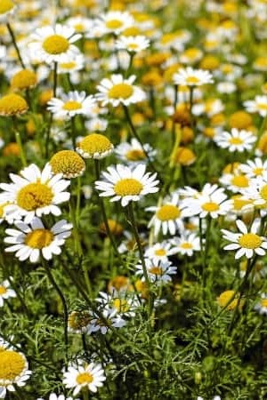
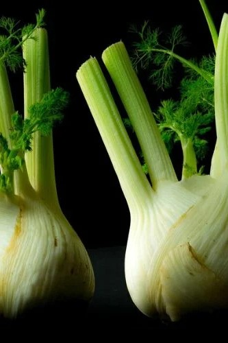
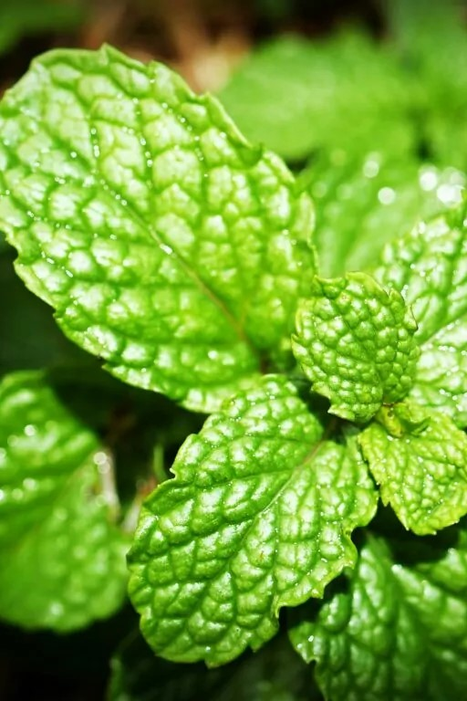
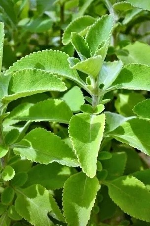
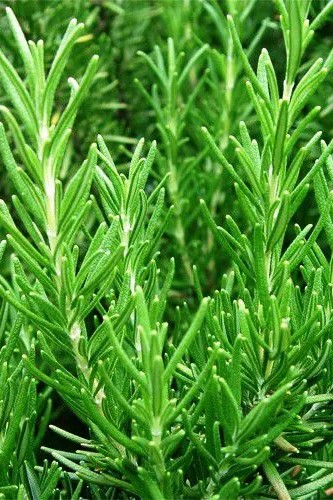
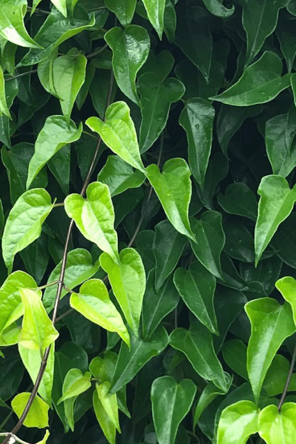
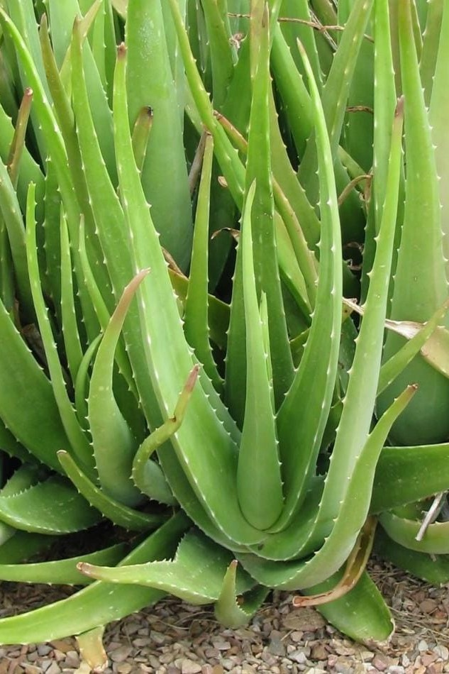
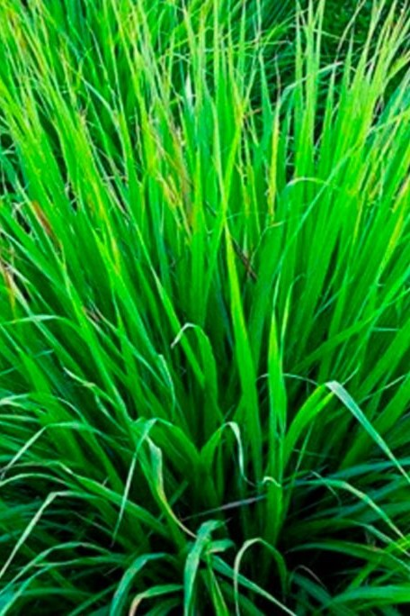
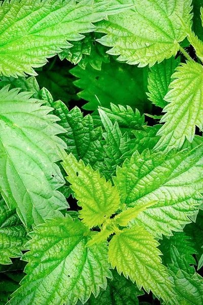

Camomila
Uso: Calmante, digestiva, anti-inflamatória.
comentar
sobre

Erva-doce
Uso: Alívio de gases, cólicas e má digestão.
comentar
sobre

Hortelã
Uso: Antiespasmódica, digestiva, expectorante.
comentar
sobre

Boldo
Usos: Auxilia no funcionamento do fígado e da vesícula biliar.
comentar
sobre

Alecrim
Usos: Estimulante mental, antioxidante e anti-inflamatório.
comentar
sobre

Guaco
Usos: Expectorante natural, broncodilatador, indicado para tosse, bronquite, gripe e inflamações nas vias respiratórias.
comentar
sobre

Babosa
Usos: Cicatrizante, hidratante para pele e cabelos, alívio de queimaduras.
comentar
sobre

Capim-limão
Usos: Calmante, digestivo e leve antiespasmódico.
comentar
sobre

Urtiga
Usos: Anti-inflamatória, rica em ferro, usada para anemia e artrite.
comentar
sobre